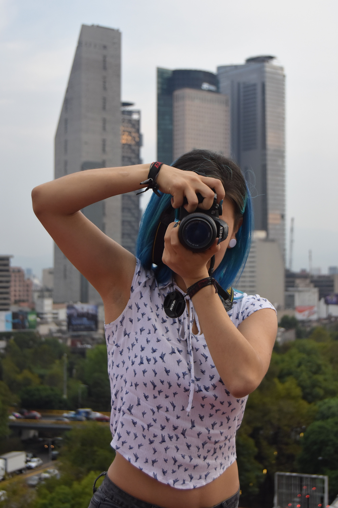
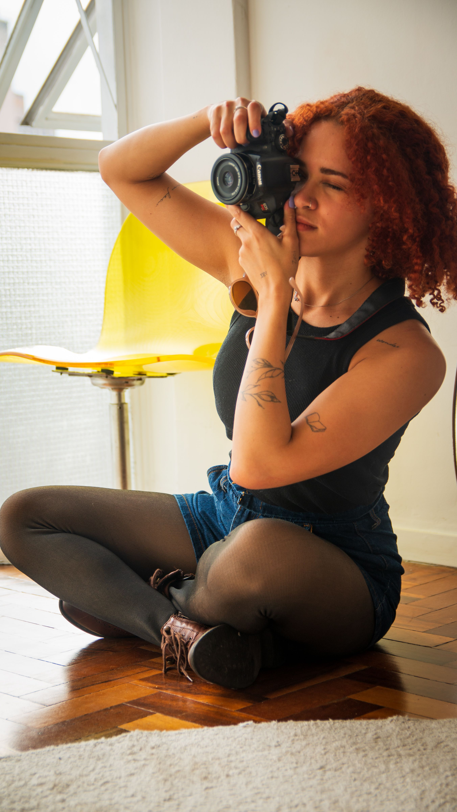
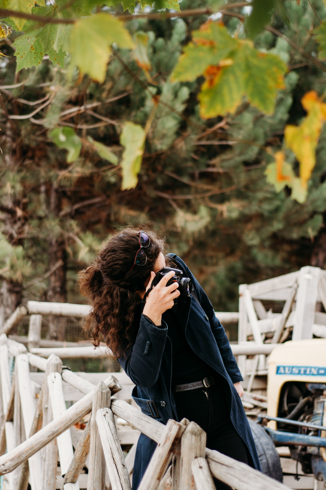
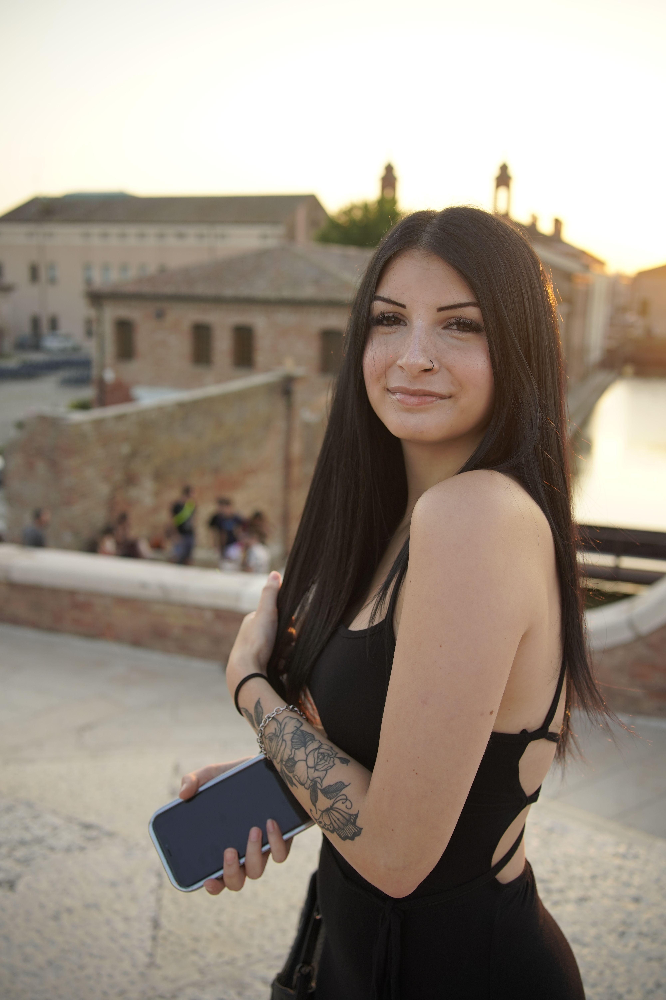

Fotografie che diventano il volto del tuo brand
Le immagini sono la prima cosa che le persone notano e l'ultima che dimenticano. Realizziamo shooting con uno sguardo editoriale: prodotti, persone e spazi raccontati con luce, intenzione e carattere.
Lavora con noi

Una buona fotografia non mostra com'è fatto un prodotto: racconta perché dovrebbe importarti.
Per questo ogni shooting parte da una domanda — cosa deve sentire chi guarda? — e solo dopo arrivano set, luci e scatti. Il risultato sono immagini coerenti con il brand, pensate per vivere bene sul sito, sui social e sulla carta.

Di cosa ci occupiamo
Still life & prodotto
Immagini pulite o costruite ad arte per e-commerce, cataloghi e campagne.
Dal packshot alla still life creativa.
Ritratti & team
Le persone dietro al brand, raccontate con naturalezza: founder, team e maestranze.
Perché la fiducia nasce dai volti.
Spazi & interni
Ristoranti, studi, boutique e location raccontati con la loro luce migliore.
Per hospitality, immobiliare e retail.
Food
Piatti e materie prime fotografati con cura editoriale, sul set o in cucina.
In collaborazione con chef e food stylist.
Reportage & eventi
La copertura discreta e attenta di eventi, lanci e momenti dietro le quinte.
Materiale prezioso anche per i social.
Cosa è incluso in uno shooting
Ogni shooting è costruito su misura, ma una produzione tipo comprende:
- Moodboard e progettazione del set
- Giornata di shooting con attrezzatura completa
- Selezione editoriale degli scatti
- Post-produzione professionale
- Galleria in alta risoluzione e formati social
- Diritti d'uso chiari e trasparenti


Francesca Zama
PhotographerFrancesca fotografa brand da quando ha capito che ogni oggetto, piatto o spazio ha un carattere — e che il suo lavoro è farlo emergere. Il suo sguardo editoriale arriva da anni di progetti tra food, moda e hospitality.
In Kare Studio guida il ramo fotografia: cura ogni progetto dallo scouting della location alla consegna finale, e lavora spesso fianco a fianco con i rami social e video dello studio.

Il tuo brand dovrebbe lavorare per te 24 ore su 24. Lo sta facendo?
Prenota una consulenza conoscitiva con lo studio: capiamo insieme dove sei e di quale ramo hai davvero bisogno.
→ Gratuita e senza impegno: bastano due minuti per scriverci.
Raccontaci il tuo progetto